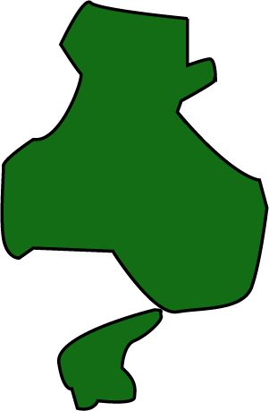

Hyōgo Prefecture is located in the Kansai region of Honshu. Nestled between two coastlines on the Sea of Japan and the Seto Inland Sea, most of Hyōgo consists of sparsely populated geographical regions with tiny inland villages. The coasts however, mainly the southern coast, boast major metropolitan areas. 20% of the total land of Hyōgo is designated as Natural Parks where beautiful beaches, vast mountain rangers, rugged coastlines, and inland forests can be visited. Historically speaking, Hyōgo contains intriguing museums, historic buildings, and ancient castles, as well as festivals to celebrate traditions. (Source: Hyogo Official Site)
Prefecture Image
